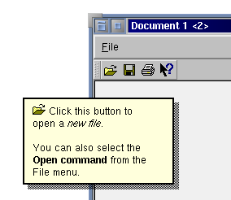

| 主页 | 所有的类 | 主要的类 | 注释的类 | 分组的类 | 函数 |
QWhatsThis类提供了任何一个窗口部件的简单描述，比如，回答“这是什么？”的问题。 详情请见……
#include <qwhatsthis.h>
继承了Qt。
“这是什么？”帮助是提供给用户关于功能、用法、背景等等不同水平的从短的工具指南到完全的文本浏览帮助窗口的应用程序的在线帮助系统的一部分。
QWhatsThis是当用户询问“这是什么？”时提供的弹出的具有说明性文本的一个单一窗口。这样做的默认方法是把焦点移动到相关窗口部件并且按下Shift+F1。帮助文本就会立即出现，一旦用户做了其它什么事情，它就消失了。
（注意如果其它地方的快捷键是Shift+F1的话，这个机制就不能工作了。）
为了给一个窗口部件添加“这是什么？”文本，你只要对它简单地调用QWhatsThis::add()就可以了。比如，给一个菜单项分配文本，调用QMenuData::setWhatsThis()，对于一个全局快捷键，调用QAccel::setWhatsThis()并且如果你正在使用操作，使用QAction::setWhatsThis()。
这个文本可以是纯文本，也可以是多信息文本。如果你指定了一个多信息文本格式的字符串，它将被使用默认的样式表来显示。这样还可以使用嵌入的图片。详细情况请参考QStyleSheet::defaultSheet()。
const char * fileOpenText = "<p><img source=\"fileopen\"> "
"Click this button to open a <em>new file</em>. <br>"
"You can also select the <b>Open</b> command "
"from the <b>File</b> menu.</p>";
QMimeSourceFactory::defaultFactory()->setPixmap( "fileopen",
fileOpenAction->iconSet().pixmap() );
fileOpenAction->setWhatsThis( fileOpenText );
（对于上面的代码更详细的解释请参考具有QAction特征的简单应用程序的排演。）
另一个进入“这是什么？”模式的方法是使用已经由QWhatsThis::whatsThisButton()做好的工具条按钮。通过调用这个上下文帮助按钮（在下面图片中右面的第一个），用户切换到“这是什么？”模式。如果现在你在窗口部件上点击，适当的帮助文本就会被显示。当帮助被给出或者用户按下Esc时，这个模式就离开了。

如果你正在使用QMainWindow，你也可以使用QMainWindow::whatsThis()槽来从菜单项中调用这个模式。
为了更多的控制，你可以为一个特定窗口部件创建一个专用的QWhatsThis对象。通过继承和重新实现QWhatsThis::text()，它可能具有不同的帮助文本，依赖于鼠标点击的位置。通过重新实现QWhatsThis::clicked()，在帮助文本中使用超链接也是可能的。
如果你想手工地控制窗口部件的“这是什么？”的行为，请参考QWidget::customWhatsThis()。
使用QWhatsThis::remove()可以移除这是什么对象，尽管这很少需要，因为当窗口部件被销毁时它会被自动地移除。
当这个窗口部件被用户查询时，这个QWhatsThis的text()函数将会被调用来提供适当的文本，而不是使用由add()提供的文本。
如果这个窗口部件后来被销毁，这个文本也被销毁，所以它不需要被明显地移除。
也可以参考remove()。
实例：application/application.cpp和mdi/application.cpp。
当用户在“这是什么？”窗口中点击鼠标时，这个虚函数被调用。href是用户所点击的连接，如果没有连接，就是QString::null。
如果函数返回真（默认），“这是什么？”窗口被关闭，否则它仍保留可视。
默认实现是忽略href并且返回真。
如果窗口部件w不为零并且已经有了自己专有的QWhatsThis对象，当用户在帮助文本的超链接上点击时，这个对象将会接收clicked()消息。
也可以参考QWhatsThis::clicked()。
Qt将会安装一个特定的光标并且取代鼠标输入直到用户在某处点击为止。然后它显示任何可以提供的帮助并且切换出“这是什么？”模式。最后，Qt在鼠标左键不再点击的点移除特定光标和帮助窗口，然后回复通常的事件处理。
用户也可以使用Esc键离开“这是什么？”模式。
也可以参考inWhatsThisMode()和leaveWhatsThisMode()。
也可以参考enterWhatsThisMode()和leaveWhatsThisMode()。
这个函数被支持QWidget::customWhatsThis()的窗口部件内部使用，应用程序通常不会调用它。有一个QPopupMenu这样的窗口部件的实例：菜单还在“这是什么？”模式正常工作，但也为个别的菜单项提供帮助文本。
如果text不是一个零字符串，“这是什么？”帮助窗口将在全局屏幕的位置pos处被显示。如果窗口部件w非零并且它有自己专有的QWhatsThis对象，当用户点击帮助文本中的超链接时，这个对象将收到clicked()消息。
也可以参考inWhatsThisMode()、enterWhatsThisMode()和QWhatsThis::clicked()。
也可以参考add()。
默认实现是返回QString::null。
如果includeParents为真，父窗口部件将也被考虑进去。
也可以参考add()。
(void) QWhatsThis::whatsThisButton( my_help_tool_bar );
这个文件是Qt工具包一部分。 版权所有 © 1995-2002 Trolltech。保留所有权利。
| Copyright © 2002 Trolltech | Trademarks | 译者:Cavendish | Qt 3.0.5版
|